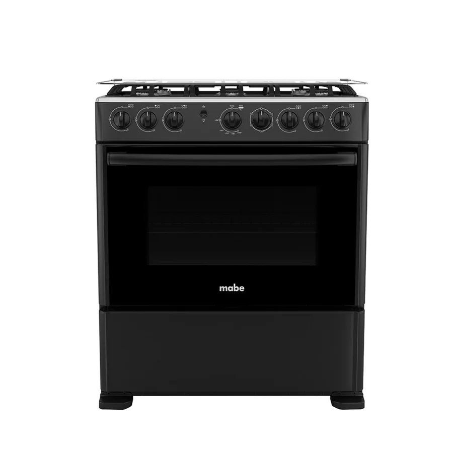
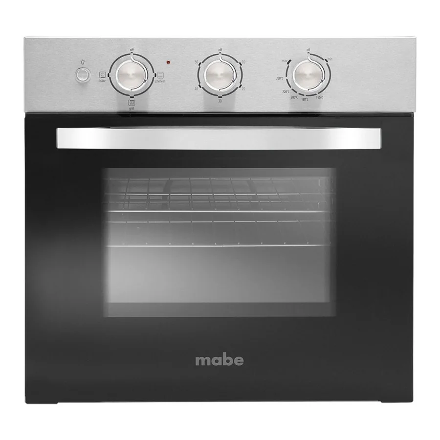
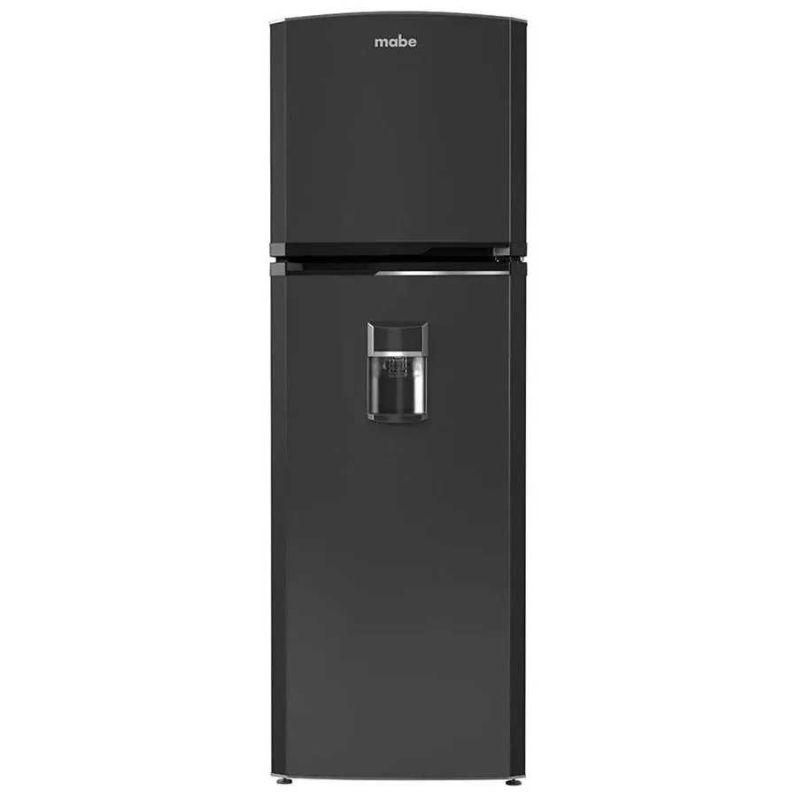

Imágenes de referencia de equipos Mabe.
Cobertura en La Villaflora
Atendemos La Villaflora y sus alrededores, en el sur de Quito. Algunas referencias de la zona:
La VillafloraAv. Pedro Vicente MaldonadoAv. Rodrigo de Chávez
Cómo es la visita en esta zona
Es una zona mixta, con casas, edificios y comercios. Te pedimos la dirección y alguna referencia para llegar sin demoras.
Equipos Mabe que revisamos
Visitamos La Villaflora para reparar y dar mantenimiento a estos electrodomésticos:
Reparación por equipo en La Villaflora
Zonas cercanas
Preguntas frecuentes
¿Atienden en La Villaflora?
Sí. Escríbenos tu dirección y una referencia por WhatsApp y coordinamos la visita en La Villaflora.
¿Qué equipos Mabe reparan en La Villaflora?
Refrigeradoras, congeladores, lavadoras, secadoras, centros de lavado, cocinas, hornos, parrillas, campanas, microondas y lavavajillas.
¿Cuánto cuesta la visita?
Escríbenos con el equipo, el modelo y la falla; te confirmamos el costo de la visita antes de ir.